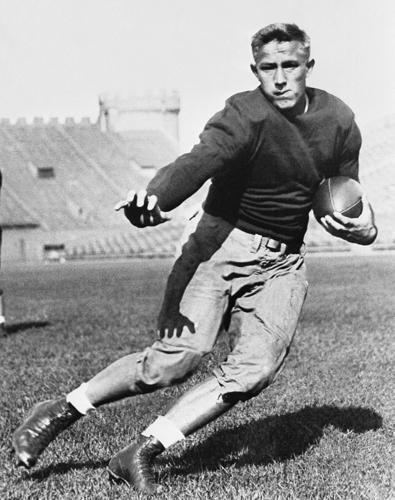
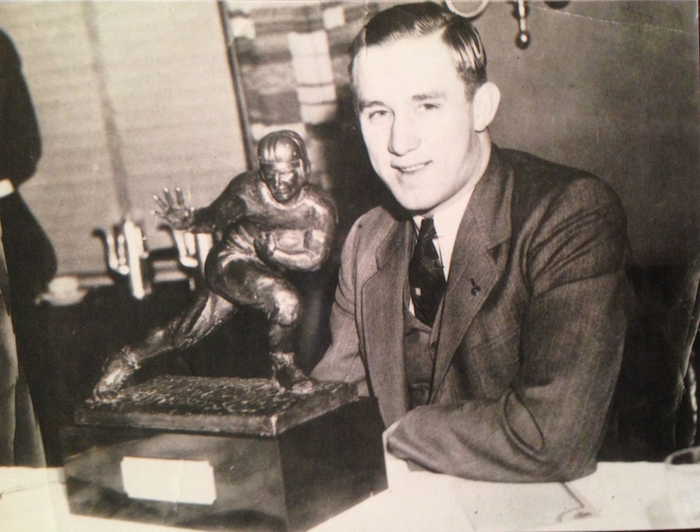
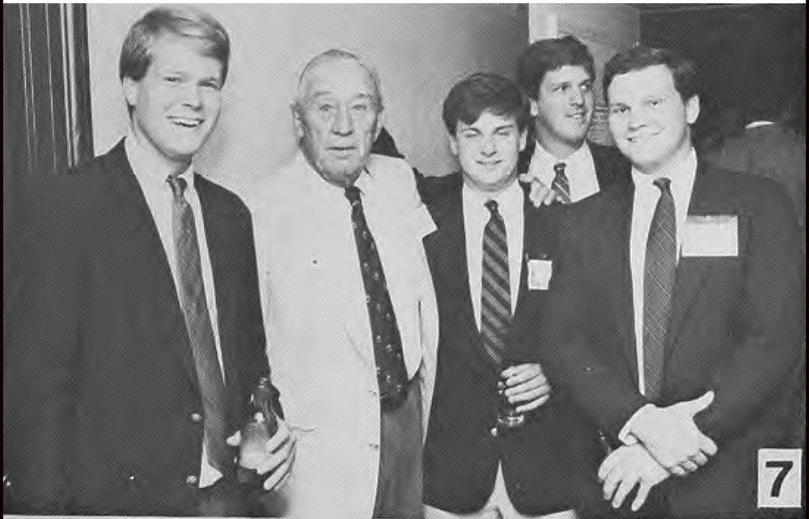

From the Archives · 1935
Psi U and the First NFL Draft

Jay Berwanger, Omega '36 (Chicago), has a storied football history with the Chicago Maroons where he earned the nickname "The One Man Team". While his position was officially halfback, he played all over the field even handling some of the kicking duties. His senior year he rushed for 577 yards, passed for 405, returned kickoffs for 359 and added five PATs. All his accomplishments led him to be the Big Ten Most Valuable Player, a unanimous All-American, and was the first recipient of the Downtown Athletic Club trophy in 1935 - which was renamed the Heisman Trophy in 1936!
Posing with the original "Downtown Athletic Club" Trophy in 1935
These achievements led to him becoming the first NFL draft pick in 1936, which also happened to be the first ever NFL draft!
Prior to 1936 every collegiate player was considered a free agent and signed by the team of their choosing. It would usually be one that offered the largest contract or had the best reputation, with undesirable clubs struggling. In 1935, Stan Kostka, a standout running back on the Minnesota Gophers, caused a particularly heated bidding war, eventually signing with the Brooklyn Dodgers for a $5,000 contract. This led the NFL owners to create a draft to increase parity in the league, allowing the teams with the worst records the ability to sign players first.

The first NFL draft was quite different than what we witness today: the nine NFL teams didn't have scouting departments, there was no media coverage of the draft, collegiate football was more popular than pro ball and salaries weren't competitive with many professional jobs out of college, and many NFL players had second jobs. In fact, of the 81 players drafted in 1936, only 31 ever played in the NFL. The 1936 draft was held in the Ritz Carlton Hotel in Philadelphia on Feb 8, 1936, and 90 graduating seniors had their names written on a blackboard that owners chose from. The Philadelphia Eagles had the first pick and drafted Jay Berwanger but knew they couldn't sign him for the salary he was asking for and traded the pick to the Chicago Bears. Supposedly Berwanger was looking for two years guaranteed for $25,000 and Bears owner George Halas was willing to go to $13,500 but not anymore (the average player salary at that time was around $2,000 per season, which would be about $40,000 today).
Brother Berwanger went on and worked for a rubber company and coached at the University of Chicago after college. After Pearl Harbor he enlisted in the Navy and then he founded Jay Berwanger, Inc in Downers Grove in 1949 - a plastic and rubber manufacturing company.
Some additional facts about Brother Berwanger:

On winning the first Heisman: "It wasn't really a big deal when I got it," Berwanger recalled in a 1985 interview. "I was more excited about the trip than the trophy because it was my first flight." In fact the Chicago Tribune first referenced it as "A trophy at a luncheon"
Berwanger once met President Gerald Ford, who told him, "I think of you every morning when I shave." Ford was a linebacker at the University of Michigan and had a scar on his face from the time he tackled Berwanger. He was the only Heisman winner to be brought down by a future U.S. president.
Berwanger did end up playing sports after his collegiate career - and successfully at that! After graduating but before enlisting in the Navy he played for a Chicago Rugby team that won 19 straight games. In fact he played a game in Soldier Field against a New York club that featured Larry Kelly, the second winner of the Heisman Trophy, who also never played in the NFL. He was inducted into the Rugby Hall of Fame in 2016.
While at the University of Chicago his coach was Amos Alonzo Stagg, Beta 1888 (Yale). You can read about Staggs contributions to the sport in the First Issue of Psi U Reflections from 2021.
Jay Berwanger posing with delegates at the 144th Psi Upsilon Convention in 1987, hosted by the Delta Chapter